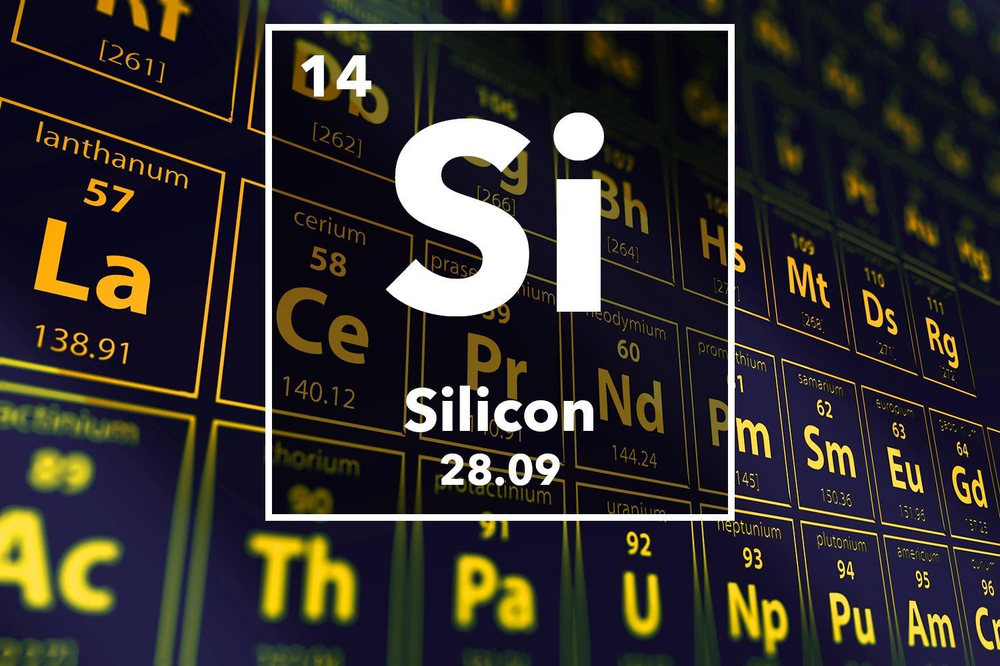

SILICON

PROPERTIES
1)It could be found attached to other elements, for instance, oxygen and it’s symbol is (Si).
2) It reacts with halogens forming halides
3)Although it may be glistening like a metal but it is a metalloid.
Reaction of silicon with water
SiO+H2O-->SiO2+H
Reaction of silicon with halogens
Si+F2-->SiF + F